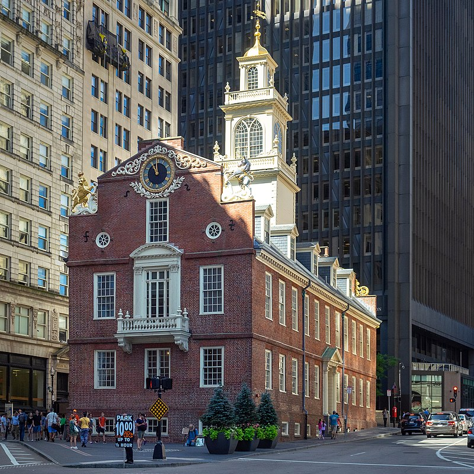
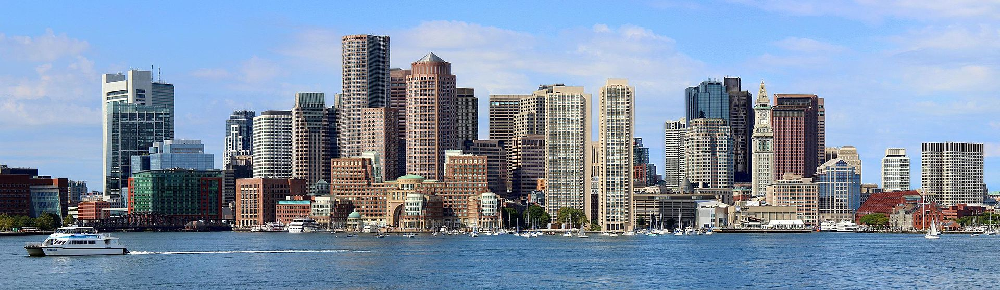
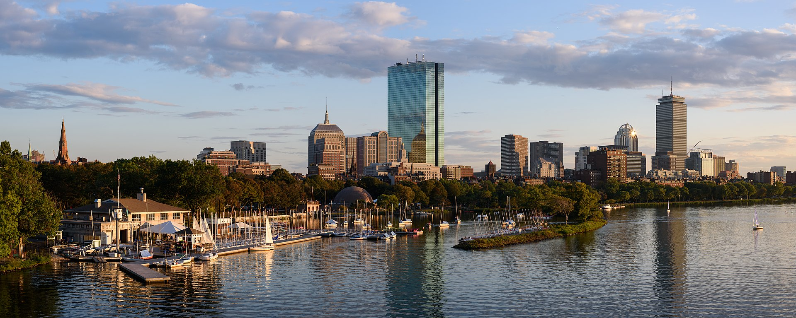
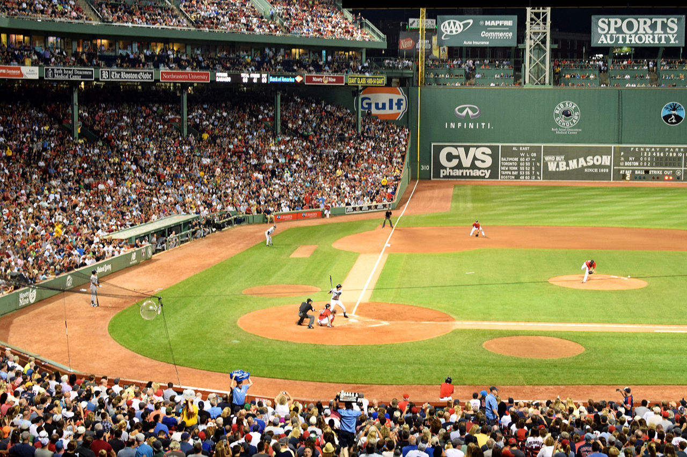

From Wikipedia, the free encyclopedia
This article is about the U.S. city. For the town in England from which the city is named after, see Boston, Lincolnshire. For other uses, see Boston (disambiguation).
Boston officially the City of Boston, is the state capital and most populous city of the Commonwealth of Massachusetts, as well as the cultural and financial center of the New England region of the United States. It is the 24th-most populous city in the country.[5] The city boundaries encompass an area of about 48.4 sq mi (125 km2)[6] and a population of 675,647 as of 2020.[7][8] It is the seat of Suffolk County (although the county government was disbanded on July 1, 1999).[9] The city is the economic and cultural anchor of a substantially larger metropolitan area known as Greater Boston, a metropolitan statistical area (MSA) home to a census-estimated 4.8 million people in 2016 and ranking as the tenth-largest MSA in the country.[10] A broader combined statistical area (CSA), generally corresponding to the commuting area[11] and including Providence, Rhode Island, is home to approximately 8.2 million people, making it the sixth most populous in the United States.
Boston is one of the oldest municipalities in America, founded on the Shawmut Peninsula in 1630 by Puritan settlers from the English town of the same name.[13][14] It was the scene of several key events of the American Revolution and the nation's founding, such as the Boston Massacre, the Boston Tea Party, the Battle of Bunker Hill, and the siege of Boston. Upon American independence from Great Britain, the city continued to be an important port and manufacturing hub as well as a center for education and culture.[15][16] The city has expanded beyond the original peninsula through land reclamation and municipal annexation. Its rich history attracts many tourists, with Faneuil Hall alone drawing more than 20 million visitors per year.[17] Boston's many firsts include the United States' first public park (Boston Common, 1634), first public or state school (Boston Latin School, 1635)[18] first subway system (Tremont Street subway, 1897),[19] and first large public library (Boston Public Library, 1848).
Today, Boston is a center of scientific research; the area's many colleges and universities, notably Harvard and MIT, make it a world leader in higher education,[20] including law, medicine, engineering and business, and the city is considered to be a global pioneer in innovation and entrepreneurship, with nearly 5,000 startups.[21][22][23] Boston's economic base also includes finance,[24] professional and business services, biotechnology, information technology, and government activities.[25] Boston is a hub for LGBT culture and LGBT activism in the United States. Households in the city claim the highest average rate of philanthropy in the United States.[26] Boston businesses and institutions rank among the top in the country for environmental sustainability and new investment.[27]
|  |  |
|  |  |